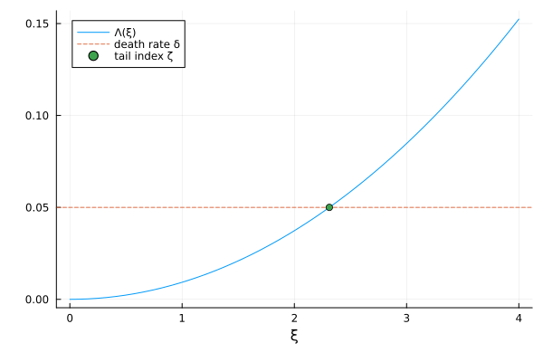

Tail indices: power laws from random growth
Wealth, firm size, and city size all have Pareto upper tails. The canonical explanation is random growth: if log size grows by increments whose distribution does not depend on size, and units die (or reset) at some rate $\delta$, the stationary distribution has a power-law tail
\[P(w_t > w) \sim w^{-\zeta}.\]
The exponent $\zeta$ is pinned down by a simple condition. Let $m_t = \log w_t$ be the cumulative log growth, and define the long-run scaled cumulant generating function
\[\Lambda(\xi) = \lim_{t \to \infty} \frac{1}{t} \log E\left[e^{\xi m_t}\right] = \lim_{t \to \infty} \frac{1}{t} \log E\left[w_t^{\xi}\right].\]
Then $\zeta$ solves $\Lambda(\zeta) = \delta$: in the stationary distribution, the $\zeta$-th moment explodes at exactly the rate at which death truncates it. When the growth rate depends on a persistent Markov state — heterogeneous returns, firm productivity, entrepreneurial skill — $\Lambda$ is no longer a simple quadratic, but it remains computable: it is the principal eigenvalue of a tilted generator matrix (Hansen and Scheinkman 2009; Beare and Toda 2022; Gouin-Bonenfant and Toda 2023). This tutorial computes it by hand, and then with the helpers cgf and tail_index.
Setup: growth with a persistent state
Suppose an individual's wealth grows at a rate that follows a persistent Ornstein–Uhlenbeck state $x_t$ (mean zero, so no growth on average), plus idiosyncratic noise:
\[d \log w_t = x_t \, dt + \nu \, dZ^m_t, \qquad dx_t = -\kappa x_t \, dt + \sigma_x \, dZ_t.\]
using InfinitesimalGenerators, LinearAlgebra
κ, σx = 0.1, 0.009 # growth-rate state: persistence and volatility
ν = 0.1 # idiosyncratic volatility of wealth growth
δ = 0.05 # death rate: expected lifespan 20 years
X = OrnsteinUhlenbeck(; xbar = 0.0, κ = κ, σ = σx)
xs = only(state_space(X))
μm = collect(xs) # drift of log wealth = the state itself
σm = fill(ν, length(xs))(The grids built by OrnsteinUhlenbeck deliberately extend to the $10^{-10}$ quantiles of the state's stationary distribution: the principal eigenvalue is sensitive to the far tails of the state space, so wide grids matter here more than anywhere else.)
The CGF by hand
For a diffusion, $E[e^{\xi m_t} f(x_t)]$ obeys the same backward equation as an ordinary expectation, except with a tilted generator: multiplying by $e^{\xi m_t}$ adds the instantaneous CGF of the increment, $\xi \mu_m(x) + \tfrac{1}{2}\xi^2 \sigma_m(x)^2$, to the diagonal:
\[\mathbb{A}_\xi = \mathbb{A} + \text{Diagonal}\left(\xi \mu_m + \tfrac{1}{2} \xi^2 \sigma_m^2\right).\]
As $t$ grows, $E[e^{\xi m_t}] \approx e^{\Lambda(\xi) t}$ where $\Lambda(\xi)$ is the dominant eigenvalue of $\mathbb{A}_\xi$ — a Perron–Frobenius eigenvalue, real and simple, because $\mathbb{A}_\xi$ has non-negative off-diagonals. By hand:
𝔸 = generator(X)
Λ(ξ) = maximum(real, eigvals(Matrix(𝔸 + Diagonal(ξ .* μm .+ 0.5 .* ξ .^ 2 .* σm .^ 2))))
Λ(1.0)0.009279699494557508The tail exponent solves $\Lambda(\zeta) = \delta$ — a one-dimensional root-finding problem on a convex function:
using Plots, Roots
ζ_hand = find_zero(ξ -> Λ(ξ) - δ, (0.1, 10.0))
ξs = range(0, 4, length = 50)
plot(ξs, Λ.(ξs); label = "Λ(ξ)", xlabel = "ξ", legend = :topleft)
hline!([δ]; label = "death rate δ", linestyle = :dash)
scatter!([ζ_hand], [δ]; label = "tail index ζ")
... and with the helpers
AdditiveFunctional(X, μm, σm) represents the pair (state, cumulative growth). cgf(m, ξ) returns $\Lambda(\xi)$, computed as the principal eigenvalue of the tilted generator tilted_generator(m, ξ) by inverse iteration rather than a full eigendecomposition (use cgf_eigenvector(m, ξ, :right) — or :left — when you also need the associated eigenvector):
m = AdditiveFunctional(X, μm, σm)
Λ1 = cgf(m, 1.0)
Λ1 - Λ(1.0)1.0005885009434223e-14tail_index(m; δ) performs the root-finding:
ζ = tail_index(m; δ = δ)
(ζ, ζ_hand)(2.311696963520049, 2.311693405118811)Persistence fattens the tail
With constant growth $d\log w = \bar\mu \, dt + \bar\sigma \, dZ$, the CGF is the quadratic $\Lambda(\xi) = \bar\mu \xi + \tfrac{1}{2}\bar\sigma^2 \xi^2$ and the tail index has a closed form, available as the scalar method tail_index(μ, σ; δ) — where μ is the arithmetic growth rate of $w$ itself, $\bar\mu + \bar\sigma^2/2$:
ζ_const = tail_index(0.0 + ν^2 / 2, ν; δ = δ)
(ζ_const, tail_index(AdditiveFunctional(X, zeros(length(xs)), σm); δ = δ))(3.162277660168379, 3.162261109352111)Now compare: the persistent economy has the same average growth rate (zero) and the same idiosyncratic volatility as this constant benchmark, yet its tail is markedly fatter (a smaller $\zeta$):
(persistent = ζ, constant = ζ_const)(persistent = 2.311696963520049, constant = 3.162277660168379)The reason is that a persistent growth state adds long-run variance: individuals who draw a high $x$ keep growing fast for $1/\kappa \approx 10$ years, and it is precisely those lucky histories that populate the far tail. Quantitatively, the persistent component contributes $2 \, \text{Var}(x)/\kappa = \sigma_x^2/\kappa^2$ to the long-run variance of $m_t/\sqrt{t}$, so the tail behaves roughly like a constant economy with total variance $\nu^2 + \sigma_x^2/\kappa^2$:
σ2_longrun = ν^2 + σx^2 / κ^2 # long-run variance of m_t / √t
ζ_approx = tail_index(σ2_longrun / 2, sqrt(σ2_longrun); δ = δ)
(exact = ζ, gaussian_approximation = ζ_approx)(exact = 2.311696963520049, gaussian_approximation = 2.3505024736113427)The approximation is close but not exact — the exact $\Lambda$ is not quadratic, and its curvature beyond the second cumulant is part of what the eigenvalue computation captures. This matters in applications: as Gouin-Bonenfant and Toda (2023) emphasize, treating the tail exponent with a two-moment approximation can misstate tail inequality substantially when growth rates are persistent.
Beyond diffusions: growth driven by a discrete state
AdditiveFunctional accepts any process in the package, not just diffusions. The leading case is growth driven by a discrete type — the Markov multiplicative processes of Beare and Toda (2022) — for example units that alternate between a normal and a high-growth regime:
Zg = ContinuousTimeMarkovChain([0.0, 0.06], [-0.1 0.1; 0.5 -0.5]) # states = growth rates
mz = AdditiveFunctional(Zg, [0.0, 0.06], [ν, ν])
ζz = tail_index(mz; δ = δ)2.175763214559554The computation is the same principal-eigenvalue problem, now on a $2 \times 2$ tilted matrix — small enough to verify by hand against the defining condition $\Lambda(\zeta) = \delta$:
Λz(ξ) = maximum(real, eigvals(Matrix(generator(Zg)) + Diagonal(ξ .* [0.0, 0.06] .+ 0.5 .* ξ .^ 2 .* ν^2)))
Λz(ζz) - δ8.408279406485475e-7References
- Hansen, L. P., and J. A. Scheinkman (2009): Long-Term Risk: An Operator Approach, Econometrica — the principal-eigenvalue characterization of long-run expectations $E[e^{\xi m_t}]$.
- Beare, B., and A. A. Toda (2022): Determination of Pareto Exponents in Economic Models Driven by Markov Multiplicative Processes, Econometrica — $\Lambda(\zeta) = \delta$ as the general condition for Pareto exponents.
- Gouin-Bonenfant, É., and A. A. Toda (2023): Pareto Extrapolation: An Analytical Framework for Studying Tail Inequality, Quantitative Economics — using the tail exponent to discipline heterogeneous-agent models.